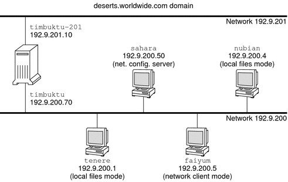

|
|||
|
1. Solaris TCPIP Protocol Suite (Overview) 2. Planning an IPv4 Addressing Scheme (Tasks 3. Planning an IPv6 Addressing Scheme (Overview) 4. Planning an IPv6 Network (Tasks) 5. Configuring TCP/IP Network Services and IPv4 Addressing (Tasks) Before You Configure an IPv4 Network (Task Map) Adding a Subnet to a Network (Task Map) Network Configuration Task Map Configuring Systems on the Local Network How to Configure a Host for Local Files Mode How to Set Up a Network Configuration Server How to Configure Hosts for Network Client Mode How to Change the IPv4 Address and Other Network Configuration Parameters Packet Forwarding and Routing on IPv4 Networks Monitoring and Modifying Transport Layer Services How to Log the IP Addresses of All Incoming TCP Connections How to Add Services That Use the SCTP Protocol How to Use TCP Wrappers to Control Access to TCP Services 6. Administering Network Interfaces (Tasks) 7. Enabling IPv6 on a Network (Tasks) 8. Administering a TCP/IP Network (Tasks) 9. Troubleshooting Network Problems (Tasks) 10. TCP/IP and IPv4 in Depth (Reference) 12. About Solaris DHCP (Overview) 13. Planning for DHCP Service (Tasks) 14. Configuring the DHCP Service (Tasks) 15. Administering DHCP (Tasks) 16. Configuring and Administering DHCP Clients 17. Troubleshooting DHCP (Reference) 18. DHCP Commands and Files (Reference) 19. IP Security Architecture (Overview) 21. IP Security Architecture (Reference) 22. Internet Key Exchange (Overview) 24. Internet Key Exchange (Reference) 25. Solaris IP Filter (Overview) 28. Administering Mobile IP (Tasks) 29. Mobile IP Files and Commands (Reference) 30. Introducing IPMP (Overview) 31. Administering IPMP (Tasks) Part VI IP Quality of Service (IPQoS) 32. Introducing IPQoS (Overview) 33. Planning for an IPQoS-Enabled Network (Tasks) 34. Creating the IPQoS Configuration File (Tasks) 35. Starting and Maintaining IPQoS (Tasks) 36. Using Flow Accounting and Statistics Gathering (Tasks) |
Determining Host Configuration ModesAs a network administrator, you configure TCP/IP to run on hosts and routers (if applicable). You can configure these systems to obtain configuration information from files on the local system or from files that are located on other systems on the network. You need the following configuration information:
A system that obtains TCP/IP configuration information from local files operates in local files mode. A system that obtains TCP/IP configuration information from a remote network server operates in network client mode. Systems That Should Run in Local Files ModeTo run in local files mode, a system must have local copies of the TCP/IP configuration files. These files are described in TCP/IP Configuration Files. The system should have its own disk, though this recommendation is not strictly necessary. Most servers should run in local files mode. This requirement includes the following servers:
Additionally, routers should run in local files mode. Systems that function exclusively as print servers do not need to run in local files mode. Whether individual hosts should run in local files mode depends on the size of your network. If you are running a very small network, the amount of work that is involved in maintaining these files on individual hosts is manageable. If your network serves hundreds of hosts, the task becomes difficult, even with the network divided into a number of administrative subdomains. Thus, for large networks, using local files mode is usually less efficient. However, because routers and servers must be self-sufficient, they should be configured in local files mode. Network Configuration ServersNetwork configuration servers are the servers that supply the TCP/IP configuration information to hosts that are configured in network client mode. These servers support three booting protocols:
Network configuration servers can also function as NFS file servers. If you are configuring any hosts as network clients, then you must also configure at least one system on your network as a network configuration server. If your network is subnetted, then you must have at least one network configuration server for each subnet with network clients. Systems That Are Network ClientsAny host that obtains its configuration information from a network configuration server operates in network client mode. Systems that are configured as network clients do not require local copies of the TCP/IP configuration files. Network client mode simplifies administration of large networks. Network client mode minimizes the number of configuration tasks that you perform on individual hosts. Network client mode assures that all systems on the network adhere to the same configuration standards. You can configure network client mode on all types of computers. For example, you can configure network client mode on standalone systems. Mixed ConfigurationsConfigurations are not limited to either an all-local-files mode or an all-network-client mode. Routers and servers should always be configured in local mode. For hosts, you can use any combination of local files and network client mode. IPv4 Network Topology ScenarioFigure 5-1 shows the hosts of a fictitious network with the network number 192.9.200. The network has one network configuration server, which is called sahara. Hosts tenere and nubian have their own disks and run in local files mode. Host faiyum also has a disk, but this system operates in network client mode. Finally, the system timbuktu is configured as a router. The system includes two network interfaces. The first interface is named timbuktu. This interface belongs to network 192.9.200. The second interface is named timbuktu-201. This interface belongs to network 192.9.201. Both networks are in the organizational domain deserts.worldwide.com. The domain uses local files as its name service. Figure 5-1 Hosts in an IPv4 Network Topology Scenario |
||
|